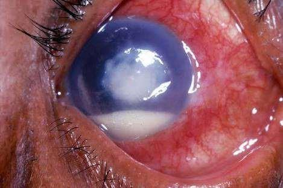

Cornea · Hypopyon ulcer
Clinical picture — signs
Signs:
- Edema of the eyelid and blepharospasm.
- Ciliary injection (the circum-corneal vessels are dilated and injected).
- Cornea at the site of the ulcer shows:
- a) Loss of luster
- b) Grayish infiltration with sloughing of the covering epithelium.
- c) This is confirmed by positive fluorescein test (if you put one drop of fluorescein into the conjunctival sac, green color will be seen with the cobalt blue light).
- The typical hypopyon ulcer appears as paracentral disc shaped deeply progressive ulcer.
- It has an advancing crescentic edge which is undermined and creeps towards the center of the cornea and is preceded by intense cellular infiltration.
- The peripheral edge is quiet healing flat edge with less infiltration and become vascularized.
- Hypopyon may be seen in the anterior chamber as yellowish fluid settling down with flat upper level. Hypopyon is sterile pus formed from PMNL (dead and living), fibrin and iris pigment due to exudation from the severe iridocyclitis.
